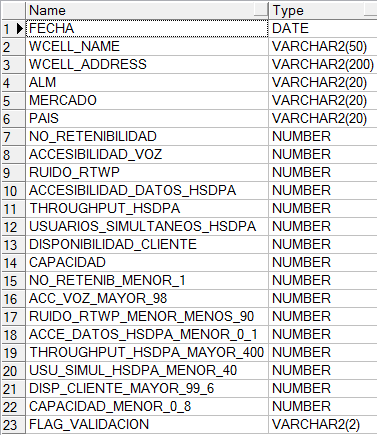
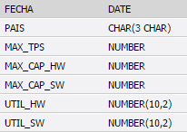
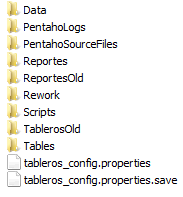

Tablero AMX Load LTE¶
1. OBJETIVO¶
El presente documento busca explicar y detallar el proceso que genera el Tablero AMX LOAD LTE.
2. ALCANCE¶
Áreas involucradas: Performance de Red
3. DEFINICIONES¶
- FD: Fecha desde, en formato DD.MM.YYYY
- FH: Fecha hasta, en formato DD.MM.YYYY
- Falda: Servidor UNIX en donde se importan los XML desde el proveedor, y en donde se encuentra Smart. El nombre es falda.claro.amx.
4. DESCRIPCIÓN GENERAL¶
TABLERO AMX LOAD LTE
El desarrollo AMX Load LTE Nokia tiene como finalidad reportar el nivel de carga (load) de las celdas y sitios. En base a 2 KPIs, uno de usuarios y otro de throughput, comparándolos con la capacidad de cada celda se determina si las celdas están sobrecargadas.
Hay cuatro condiciones posibles:
- Normal (bajo throughput, bajos usuarios)
- Alto throughput, bajos usuarios
- Altos usuarios, bajo throughput
- Alta carga (Altos usuarios, alto throughput)
Se crearon 2 tableros isabhw.
- tablero_lte_amx_load_det_ibhw
Es un tablero de detalle en el que se pueden observar los valores throughput y usuarios para cada celda y para cada sitio y sus correspondientes capacidades.
- tablero_lte_amx_load_res_ibhw
Es un tablero de resumen que muestra la cantidad de celdas y sitios que están en cada una de las condiciones expresadas arriba.
Descripción:
Server: falda.claro.amx
Base de Datos: Oracle 10G. Instancia WILLY
Frecuencia del proceso: Semanal
Proceso que genera el tablero:
Los procesos se corren a través de Jobs:
o P_TABLERO_AMX_LOAD_DET_JOB_DAY
o P_TABLERO_LTE_AMX_RES_IBHW
o P_TABLERO_LTE_AMX_RES_IBHW2
o P_TABLERO_LTE_AMX_RES_IBHW3
o P_TABLERO_LTE_AMX_RES_JOB_DAYW
o P_TABLERO_LTE_AMX_RES_IBHW
o P_TABLERO_LTE_AMX_RES_IBHW2
o P_TABLERO_LTE_AMX_RES_IBHW3
Duración del proceso: 2 minutos aproximadamente
Ubicación del proceso: falda.claro.amx
5. PENTAHO¶
PROCESO DE ENVÍO DE EMAIL
5.1. MACROFLUJO¶
5.2. Datos de Origen y Datos de Destino¶
- Server Origen y Path: Falda, /calidad/TableroAMXLoadLTE
- Frecuencia: Semanal (Los días Lunes de cada semana a las 7:00am)
- Archivo de Salida: HTML
5.3. Shell Copiar Archivos Origen a Destino y limpieza de los mismos¶
Los scripts son los siguientes:
5.4. Tablas Utilizadas¶
Las tablas utilizadas son:
- TABLERO_LTE_AMX_LOAD_DET_IBHW
- TABLERO_LTE_AMX_LOAD_RES_IBHW
5.5. Proyecto¶
- Estructura:
- Proceso Pentaho End to End
- Proceso Detalles
- Proceso Resumen Celda y Resumen Sitio
Se realiza el control de los 11 mercados y países.

El email se envía todos los Lunes a las 7:00am con el archivo adjunto:
 6. REPROCESO¶
Se crearon los procesos para los reprocesos con los siguientes parámetros:
- fecha_desde Formato: DD.MM.YYYY
- fecha_hasta Formato: DD.MM.YYYY
- begin
– Call the procedure p_tablero_amx_load_det_rec_day(p_fecha_desde => :p_fecha_desde,
p_fecha_hasta => :p_fecha_hasta);
end;
- begin
– Call the procedure p_tablero_lte_amx_res_rec_dayw(p_fecha_desde => :p_fecha_desde,
p_fecha_hasta => :p_fecha_hasta);
end;
7. CONTROL DE CAMBIOS¶
| Fecha | Responsable | Ticket Jira | Detalle | Repositorio |
|---|---|---|---|---|